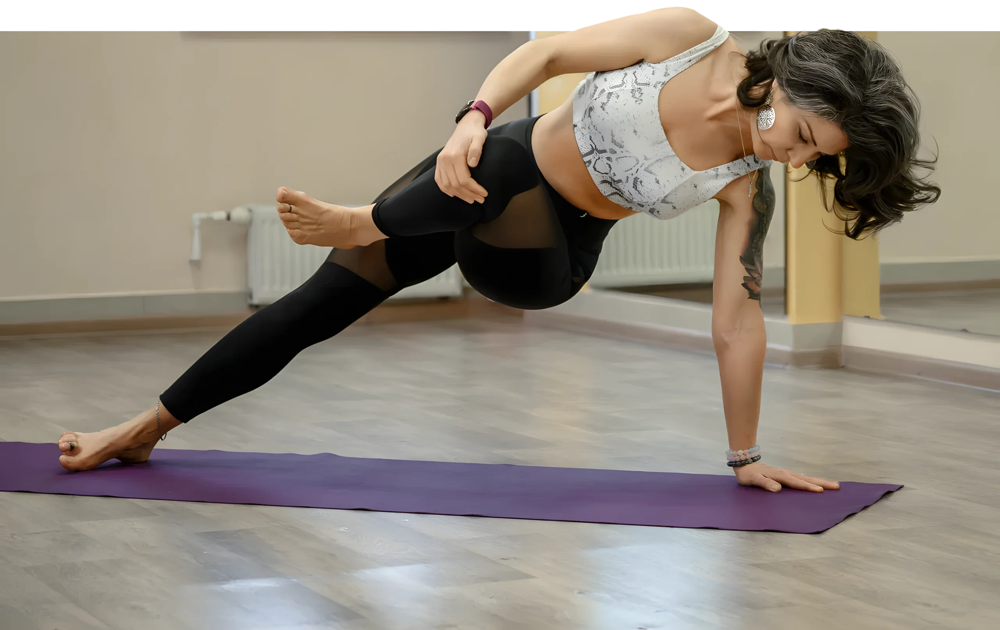

ЙОГА фристайл
56 мин, свободная практика для всех уровней
Елена Остащенко
Клуб бережной
регулярной практики
Живые занятия, записи, медитации и поддержка сообщества — занимайтесь из любой точки мира

Для кого
Для мужчин и женщин, которым нужна спокойная и вдумчивая работа со своим телом, йога дома, поддержка и возможность заниматься в удобное время.
Тем, у кого
До вступления можно задать Елене вопрос о формате занятий и выборе практики.
Задать вопрос о занятиях3 живые практики в неделю, записи, медитации, библиотека 60+ занятий и поддержка тренера — чтобы заниматься регулярно из дома без гонки за идеальной фигурой. Любой уровень подготовки.
Что получаете за месяц
Результат
Больше движения, устойчивости, контакт с телом и меньше напряжения без жесткого режима и привязки ко времени и месту.
Хатха-йога в стиле «Культура Движения»: знания по физиологии и биомеханике, функциональный подход и чувство юмора.

Знания, полученные в Индийских и Российских школах йоги, микс между научным подходом и классическими знаниями. Индивидуальность в работе с каждым клиентом, внимание к мелочам и способность и умение предвидеть результат практикующего.

Опираюсь на научно обоснованные методы в йоге, исключая эзотерическое волшебство и делая акцент на достижении реальных результатов для каждого занимающегося.
Методология и педагогика - база, на которой я строю для вас свои практики.

В занятиях используются методы, учитывающие физиологию и биомеханику, а также присутствует элемент юмора, что делает процесс обучения более лёгким и увлекательным.
Йога - это точно не скучно, всегда познавательно и интересно!
И да, я живой пример, как практика меняет тело!
Культура движения как метод
Основан на знаниях по физиологии и биомеханике, в котором используется функциональный подход применительно к практике асан, рассчитанный под задачи практикующего и приводящий к заявленным результатам.
Подходит для занимающихся разного уровня подготовки, но при этом и новичок, и опытный практик смогут рассчитать актуальную для себя нагрузку.
Для снятия стресса и болей в спине. Видео загрузится, когда вы нажмёте на обложку.
56 мин, свободная практика для всех уровней
59 мин
17 мин
1 час
Время указано по Петропавловску-Камчатскому (МСК+9) и по Москве. Запись каждого эфира появляется на платформе клуба и остаётся доступной участникам.
| День | Камчатка | Москва | Формат | Запись |
|---|---|---|---|---|
| Понедельник | 17:30–19:00 | 08:30–10:00 | ЙОГА онлайн занятие | запись в этот же день на платформе |
| Среда | 17:30–19:00 | 08:30–10:00 | ЙОГА онлайн занятие | запись в этот же день на платформе |
| Пятница | 17:30–19:00 | 08:30–10:00 | зарядка для спины, пранаяма, медитация | запись на платформе |
Оплата, письмо с доступом, вход в личный кабинет, занятия в онлайн или в записи и поддержка в чате.
Проверьте продукт, стоимость и условия перед оплатой.
На email, указанный при оформлении.
Живые занятия и записи согласно условиям клуба.
Поддержка в предусмотренном формате.
Я практикую йогу недавно, около полу года. И влюбилась в это направление, в частности, благодаря Елене! Моя жизнь, так или иначе, всегда была связана со спортом, но опыта в йоге не было, хотя желание познакомиться с этим направлением было всегда. Останавливало не знание тренеров, боязнь попасть не в то направление, незнание нюансов.
Судьба свела нас с Еленой в отеле Лагуна, я была приятно удивлена стилю преподавания, технике, насыщенности тренировки. И после пробного занятия разыскала Елену в спортклубе Протеин, осталась с ней и продолжаю радоваться каждой нашей встрече! Особенно радует возможность собраться у океана в теплые дни, пройти практику на свежем воздухе, в кругу единомышленников, убежать от городской суеты. Елена внимательный, отзывчивый, квалифицированный специалист и душевный человек. Планирую и дальше работать с ней, расти и развиваться в йоге вместе. Спасибо Вам за все
Леночка профессионал своего дела! Все четко, прокачка мышц и между делом медитации)) чтобы сначала зарядиться, а потом немного успокоить себя. Энергетика Елены заряжает и уже после первой тренировки ощущается облегчение и помощь своему телу. Во благо
С Леной мы познакомились на Дне йоги — и забыть её я уже не смогла
В ней столько энергии, тепла и искренней любви к своему делу, что сразу захотелось остаться в этой атмосфере.
Мне очень нравится, как Лена выстраивает практику: чтобы и новичку было комфортно, и тем, кто уже давно в йоге, не было скучно. Каждую асану Лена объясняет подробно — рассказывает, какие мышцы работают, на что обратить внимание, как избежать ошибок.
Лена всегда открыта к вопросам, поддерживает, подбадривает и никогда не давит: нет этого ощущения, что «надо сделать идеально любой ценой». Наоборот, она учит прислушиваться к себе — и это, пожалуй, самое ценное.
Спасибо ей за терпение, профессионализм и за шикарное чувство юмора! Ее подача информации - это нечто!
Всем, кто ищет своего тренера по йоге, очень рекомендую попробовать позаниматься с Леной — не пожалеете!
Для мотивации...
Во мне 90 кг живого веса.
Когда начала заниматься не могла даже ноги крест на крест сложить....
Сейчас спокойно сижу и много другого не доступного мне ещё пол года назад стало доступным.
Но работать ещё над собой надо очень много! Главное не переборщить
Лена, спасибо тебе!
К сожалению, не получается ходить на тренировки в зал.
Онлайн вариант занятий разрешает все сложности на пути к прекрасному самочувствию.
У меня после занятий с утра отличное настроение, что-то стонет в теле (недавно занимаюсь), заряд на весь день.
Меньше стали мучить мигрени.
Для меня занятия онлайн с утра (пока все спят и дети не лезут на коврик, в камеру телефона) замечательная возможность заботы о себе и своем состоянии на весь день.
Благодарю Лену за возможность тренироваться, внимание и чуткость на тренировках.
Лена, благодарю за удивительную практику на океане, такую разнообразную и наполненную!
Очень понравился «двойной» формат встречи - телесный опыт+пранаяма Море ценной информации, внимательный подход к каждому и.. замечательное чувство юмора (а как без этого??)!!
И Отдельное спасибо за то, что договорились с капризной камчатской погодкой)) С удовольствием присоединюсь в следующий раз!..
Не нашли ответ? Напишите Елене в Telegram или позвоните: +7 909 832-30-88
Начните с открытых практик на этой странице: «Зарядка для спины, МФР, пранаяма и квадрат дыхания» и «Антистресс дыхание и медитация» подходят для мягкого старта. В клубе любой уровень подготовки: и новичок, и опытный практик смогут рассчитать актуальную для себя нагрузку. Если сомневаетесь, задайте вопрос Елене до вступления.
Да. В клубе есть чат поддержки и возможность задать вопрос тренеру, даже если вы занимаетесь только в записи. Как удобнее показать выполнение упражнения, договоритесь с Еленой в чате.
Устройство с доступом в интернет: компьютер, ноутбук, планшет или смартфон, рекомендуемая скорость не менее 2 Мбит/с. Для практики понадобятся коврик и немного свободного места. Если для занятия нужно что-то ещё, Елена предупредит заранее.
Записи эфиров и библиотека 60+ занятий доступны участникам клуба на время оплаченного участия. Точный срок хранения записей после окончания месяца уточните у Елены перед оплатой.
Участие оплачивается помесячно, 2700 рублей в месяц. Порядок продления показывается на платформе клуба при оформлении. Если что-то непонятно, напишите Елене до оплаты.
Отказаться от услуг можно в любое время, направив уведомление по электронной почте или через форму на сайте. Условия возврата описаны в разделе 9 публичной оферты: до начала занятий возвращается сумма за вычетом фактически понесённых расходов, после начала — пропорционально неиспользованным занятиям. Деньги возвращаются в течение 3 рабочих дней после заявления.
Проверьте папку «Спам» и адрес почты, указанный при оформлении. Если письма нет, напишите Елене в Telegram или на elena.ostashenk@yandex.ru, и доступ восстановят.
Клуб задуман так, чтобы заниматься в удобное время, в удобном месте и всей семьёй. Подойдёт ли один доступ именно вашей семье, уточните у Елены перед оплатой.
Напишите Елене — уточните формат, расписание и условия участия до вступления в клуб.